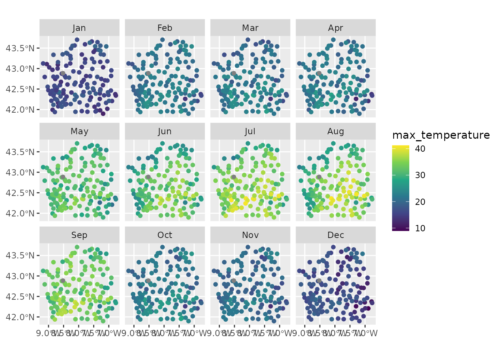

library(meteospain)
library(dplyr)
#>
#> Attaching package: 'dplyr'
#> The following objects are masked from 'package:stats':
#>
#> filter, lag
#> The following objects are masked from 'package:base':
#>
#> intersect, setdiff, setequal, union
library(ggplot2)
library(ggforce)
library(units)
#> udunits database from /usr/share/xml/udunits/udunits2.xml
library(sf)
#> Linking to GEOS 3.12.1, GDAL 3.8.4, PROJ 9.4.0; sf_use_s2() is TRUEMeteoGalicia service offers the data of the galician automatic meteorological stations network. This network is supported and assessed by the Xunta de Galicia and the data should be trustworthy.
MeteoGalicia API offers data at different temporal resolutions:
In both, “daily” and “monthly”, a start_date (and
optionally an end_date) arguments must be provided,
indicating the period from which retrieve the data.
MeteoGalicia API allows specifying stations code to narrow the data
retrieved. So, a character vector of station codes can be supplied in
the stations argument.
# last measure for all stations
api_options <- meteogalicia_options()
api_options
#> $resolution
#> [1] "instant"
#>
#> $start_date
#> [1] "2025-06-30"
#>
#> $end_date
#> [1] "2025-06-30"
#>
#> $stations
#> NULL
# current day, only some stations
api_options <- meteogalicia_options(
resolution = 'current_day',
stations = c('10157', '14000', '10045')
)
api_options
#> $resolution
#> [1] "current_day"
#>
#> $start_date
#> [1] "2025-06-30"
#>
#> $end_date
#> [1] "2025-06-30"
#>
#> $stations
#> [1] "10157" "14000" "10045"
# daily, all stations
api_options <- meteogalicia_options(
resolution = 'daily',
start_date = as.Date('2020-04-25'), end_date = as.Date('2020-05-25')
)
api_options
#> $resolution
#> [1] "daily"
#>
#> $start_date
#> [1] "2020-04-25"
#>
#> $end_date
#> [1] "2020-05-25"
#>
#> $stations
#> NULL
# monthly, some stations
api_options <- meteogalicia_options(
resolution = 'monthly',
start_date = as.Date('2020-04-01'), end_date = as.Date('2020-08-01'),
stations = c('10157', '14000', '10045')
)
api_options
#> $resolution
#> [1] "monthly"
#>
#> $start_date
#> [1] "2020-04-01"
#>
#> $end_date
#> [1] "2020-08-01"
#>
#> $stations
#> [1] "10157" "14000" "10045"Accessing station metadata for MeteoGalicia is simple:
get_stations_info_from('meteogalicia')
#> Simple feature collection with 154 features and 5 fields
#> Geometry type: POINT
#> Dimension: XY
#> Bounding box: xmin: -9.184586 ymin: 41.8982 xmax: -6.783357 ymax: 43.7383
#> Geodetic CRS: WGS 84
#> # A tibble: 154 × 6
#> service station_id station_name station_province altitude
#> * <chr> <chr> <chr> <chr> [m]
#> 1 meteogalicia 10157 Coruña-Torre de Hércules A Coruña 21
#> 2 meteogalicia 14000 Coruña-Dique A Coruña 5
#> 3 meteogalicia 10045 Mabegondo A Coruña 94
#> 4 meteogalicia 14003 Punta Langosteira A Coruña 5
#> 5 meteogalicia 10144 Arzúa A Coruña 362
#> 6 meteogalicia 19005 Guísamo A Coruña 175
#> 7 meteogalicia 10095 Sergude A Coruña 231
#> 8 meteogalicia 10800 Camariñas A Coruña 5
#> 9 meteogalicia 19001 Rus A Coruña 134
#> 10 meteogalicia 10147 Cariño A Coruña 20
#> # ℹ 144 more rows
#> # ℹ 1 more variable: geometry <POINT [°]>
api_options <- meteogalicia_options(
resolution = 'monthly',
start_date = as.Date('2020-01-01'),
end_date = as.Date('2020-12-31')
)
galicia_2020 <- get_meteo_from('meteogalicia', options = api_options)
#> ℹ A información divulgada a través deste servidor ofrécese gratuitamente aos
#> cidadáns para que poida ser
#> utilizada libremente por eles, co único compromiso de mencionar expresamente a
#> MeteoGalicia e á
#> Consellería de Medio Ambiente, Territorio e Vivenda da Xunta de Galicia como
#> fonte da mesma cada vez
#> que as utilice para os usos distintos do particular e privado.
#> https://www.meteogalicia.gal/web/informacion/notaIndex.action
galicia_2020
#> Simple feature collection with 1782 features and 31 fields (with 24 geometries empty)
#> Geometry type: POINT
#> Dimension: XY
#> Bounding box: xmin: -9.178318 ymin: 41.8982 xmax: -6.783357 ymax: 43.70426
#> Geodetic CRS: WGS 84
#> # A tibble: 1,782 × 32
#> timestamp service station_id station_name station_province altitude
#> <dttm> <chr> <chr> <chr> <chr> [m]
#> 1 2020-01-01 00:00:00 meteog… 10045 Mabegondo A Coruña 94
#> 2 2020-01-01 00:00:00 meteog… 10046 Marco da Cu… A Coruña 651
#> 3 2020-01-01 00:00:00 meteog… 10047 Pedro Murias Lugo 51
#> 4 2020-01-01 00:00:00 meteog… 10048 O Invernade… Ourense 1026
#> 5 2020-01-01 00:00:00 meteog… 10049 Corrubedo A Coruña 30
#> 6 2020-01-01 00:00:00 meteog… 10050 CIS Ferrol A Coruña 37
#> 7 2020-01-01 00:00:00 meteog… 10052 Muralla A Coruña 661
#> 8 2020-01-01 00:00:00 meteog… 10053 Campus Lugo Lugo 400
#> 9 2020-01-01 00:00:00 meteog… 10055 Guitiriz-Mi… Lugo 684
#> 10 2020-01-01 00:00:00 meteog… 10056 Marroxo Lugo 645
#> # ℹ 1,772 more rows
#> # ℹ 26 more variables: mean_temperature [°C], min_temperature [°C],
#> # min_temperature_mean [°C], max_temperature [°C], max_temperature_mean [°C],
#> # mean_relative_humidity [%], min_relative_humidity_mean [%],
#> # max_relative_humidity_mean [%], precipitation [L/m^2],
#> # max_precipitation_24h [L/m^2], mean_wind_direction [°],
#> # max_wind_direction [°], mean_wind_speed [m/s], max_wind_speed [m/s], …Visually:
galicia_2020 |>
units::drop_units() |>
mutate(month = lubridate::month(timestamp, label = TRUE)) |>
ggplot() +
geom_sf(aes(colour = max_temperature)) +
facet_wrap(vars(month), ncol = 4) +
scale_colour_viridis_c()
galicia_2020 |>
mutate(month = lubridate::month(timestamp, label = TRUE)) |>
ggplot() +
geom_histogram(aes(x = precipitation)) +
facet_wrap(vars(month), ncol = 4)
#> `stat_bin()` using `bins = 30`. Pick better value with `binwidth`.
#> Warning: Removed 1 row containing non-finite outside the scale range
#> (`stat_bin()`).